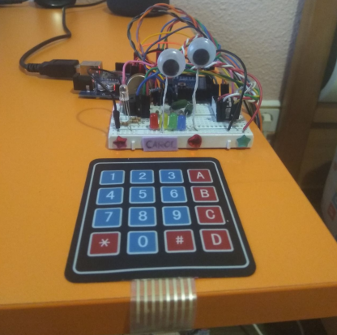

 Durante esta cuarentena, en un momento donde las relaciones sociales son algo totalmente necesario para no volverse loco, un niño que no tenía amigos decidió que, si no podía hacer amigos, tendría que hacérselos literalmente.
Así nació Carol, un robot que, además de ser de tener una gran cantidad de utilidades, ha mejorado en gran cantidad mi calidad de vida.
En esta página podrás ver en detalle cómo es Carol y cómo funciona.